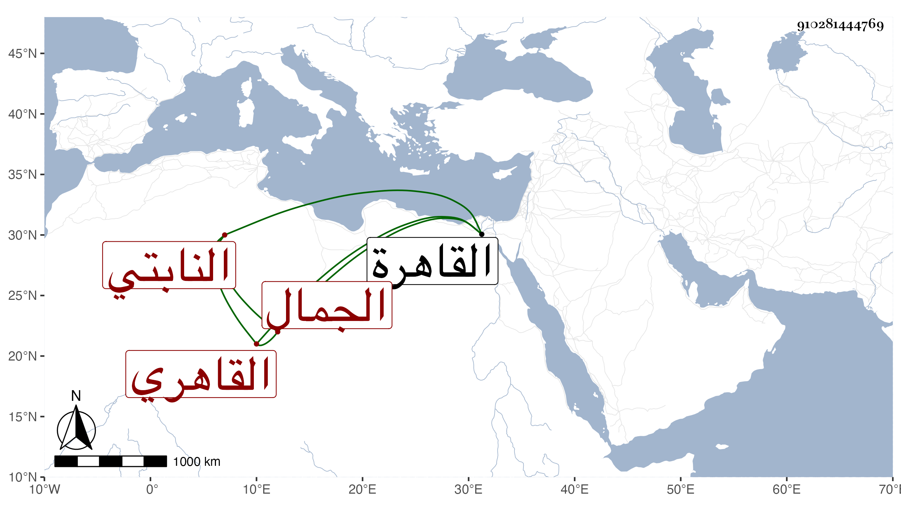

0902Sakhawi.DawLamic.ITO20230111-ara1.EIS1600.910281444769
Biography ID: 910281444769
62
عبد الله بن خلف بن محمد بن عثمان الجمال النابتي بنون ثم موحدة بعدها مثناة فوقانية ثم القاهري نزيل الظاهرية القديمة . ولد سنة ست وستين وسبعمائة تقريبا وقرأ القرآن ونشأ مخالطا للناس سيما الأتراك حريصا على السعي والتحصيل بحيث أثرى من العقارات وغيرها مع كونه ضيق العيش لا يظن من رآه به غير الفقر وهو ممن أكثر من ملازمة الولي العراقي في أماليه وغيرها وكذا سمع على شيخنا في أماليه وهو المشار إليه بقوله في المشتبه في النابتي بعد ذكر الذهبي من من ينتسب كصاحب الترجمة ما نصه : ونسب مثل هذه النسبة بعض أصحابنا من طلبة الحديث انتهى . ولا يبعد سماعه من أقدم منهما أخذ عنه بعض الطلبة وحكى لي عنه البدر الدميري مضحكات . مات في يوم الثلاثاء العشرين من رجب سنة سبع وثلاثين بالقاهرة رحمه الله وعفا عنه .
